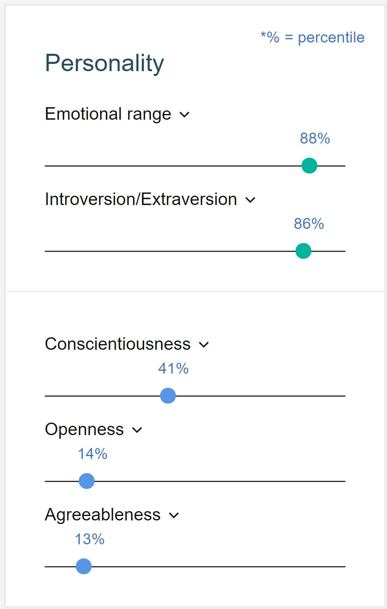
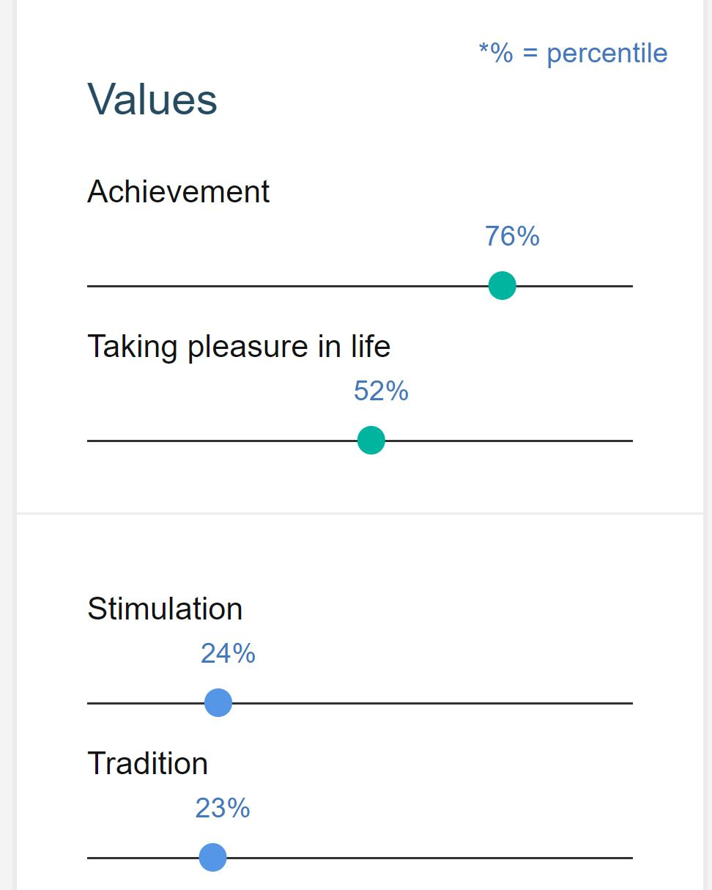

You are a bit critical, opinionated and can be perceived as verbose. You are unconcerned with art: you are less concerned with artistic or creative activities than most people who participated in our surveys. You are compromising: you are comfortable using every trick in the book to get what you want. And you are self-focused: you are more concerned with taking care of yourself than taking time for others. Your choices are driven by a desire for revelry. You are relatively unconcerned with both helping others and tradition. You think people can handle their own business without interference. And you care more about making your own path than following what others have done.
Values:
Personality: